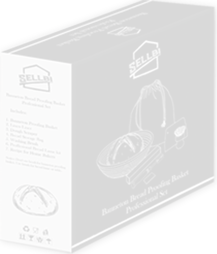

The ultimate bakers kit
Master the art of proofing!
This diverse and elaborate bread proofing
basket set is not sold by anyone.
Produce bread with artisanal flair!
Whether you are a seasoned professional, enthusiastic amateur
or baking lover, Sourly Bread Baking Basket will help your dough to ferment
correctly. Sourdough proofing bowl will allow the bread to rise evently for a crispy
and thick crust.

Why Sourly Bread Proofing Basket
is the most obvious choice:
Natural Rattan Cane - A-Level material,
handmade, high quality, non-toxic,
eco-friendly, food safe, chemical free, dye
free, mold resistant, odor-free, anti-bacterial,
chip resistant, and east to clean.
Beautiful Ring Pattern - Ridges and depth
produce a distinct spiral ring pattern that makes
your bread look more appetizing. We have first
done machine polishing
and then manual polishing which provides shine to the basket.

Safe - Smooth and splinter resistant surface
prevent wood particles from entering into the
flour.
Functional - Natural rattan cane is proven to
absorb moisture away from the surface to
impact better texture to your crust.
Perfect Size - The size of 10" is ideal for
baking every type of bread.
Naturel Rattan Cane:
Sourdough rising basket is crafted from A-Level Indonesian natural rattan
cane which is chemical free, eco-friendly and food safe. Round proofing
basket will wick moisture from the surface to create a rising and crispy
crust, every chef dreams of.
Bonus accessories:
Bread proofing basket comes with some free extras including a liner cloth,
flexible dough scraper and cutter, scouring knife, brush and carrying bag
to pack everything safely. Knife is packed in leather pack and separate
box for safety.
Well made & sturdy:
Unlike competitors, we do not use weak iron nails; instead we use
stainless steel nails in rattan proofing basket to prevent it from deforming.
The smooth and splinter free surface prevents hurting while the spiral
indentations left by the coil will create a professional artisan look.
Satisfaction guaranteed:
Buy with confidence because we stand behind our products
and its quality. In an unlikely event, if you are not satisfied
with our dough proofing basket, please contact us;
we will take immediate actions to resolve the issue.
Still have questions?
